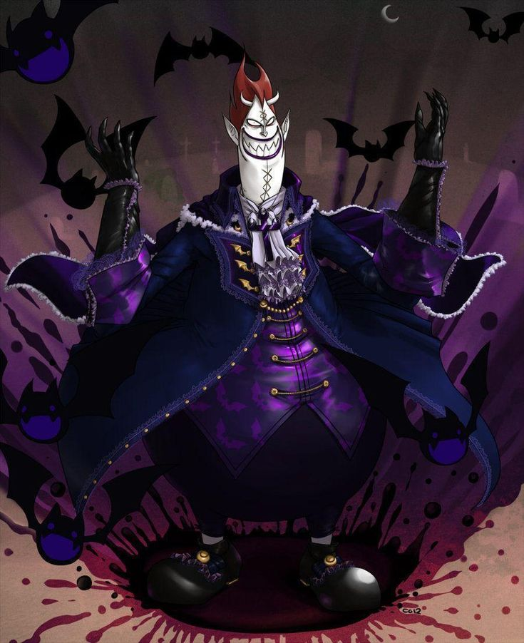

|  | BIOGRAFIA |
|---|---|
|
Gecko Moria é um dos Sete Senhores da Guerra do Mar , um pirata lendário que domina o Thriller Bark, o maior navio do mundo. Após perder toda sua tripulação para Kaido no Novo Mundo, Moria desenvolveu a filosofia de que tripulações vivas são frágeis demais. Usando sua Akuma no Mi, ele criou um exército de zumbis ao roubar sombras de pessoas vivas e implantá-las em cadáveres. Preguiçoso e arrogante devido a décadas confiando apenas em subordinados, Moria esqueceu sua própria força, mas permanece extremamente perigoso quando motivado. Sua risada característica "Kishishishi" e aparência grotesca escondem um passado de grande ambição.
| |
| ARMAS | |
|
Tesouras Gigantes: Armas enormes que pode manipular para cortar sombras. | |
| Habilidades | |
|
Kage Kage no Mi: Akuma no Mi que permite manipular sombras, roubá-las de pessoas e implantá-las em cadáveres para criar zumbis. Doppelman: Pode materializar sua própria sombra como entidade física capaz de lutar independentemente. |